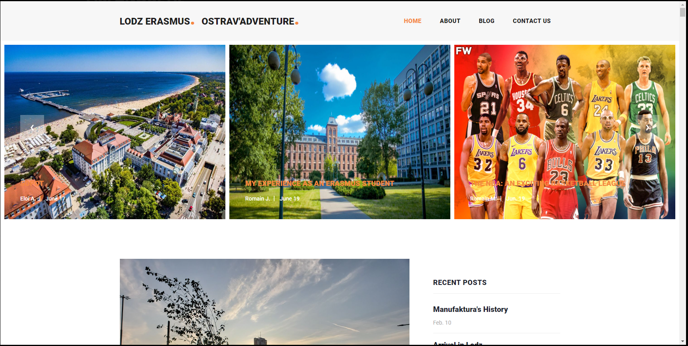
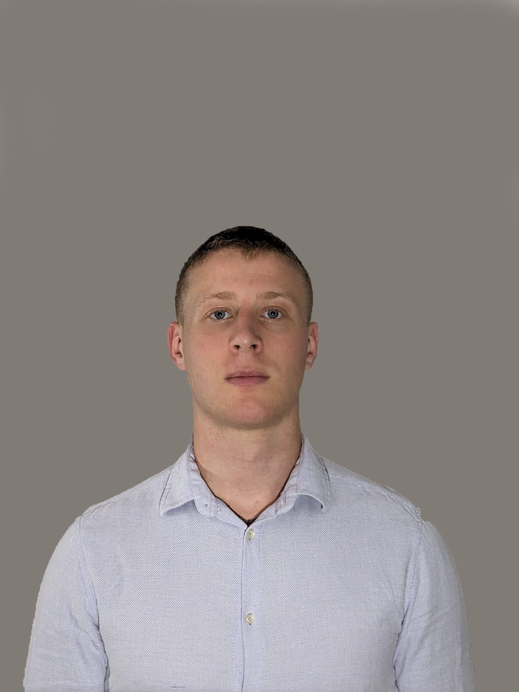
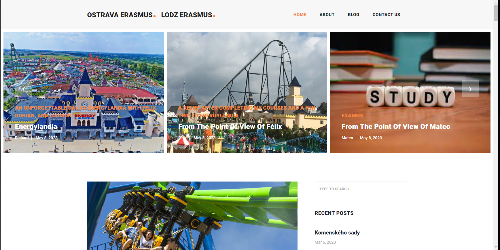

WEB / ERASMUS
Un semestre à Łódź
Un blog consacré à l’expérience Erasmus en Pologne, pour partager les découvertes et les aventures du semestre.
Explorer le siteDÉVELOPPEMENT · CYBERSÉCURITÉ · DATA
Ingénieur informatique & réseaux,
spécialité cybersécurité.
Du développement web à l’automatisation industrielle, un parcours tourné vers les systèmes, les données et leur sécurité.
En recherche d’emploi en développement ou cybersécurité

01 / À PROPOS
Diplômé de l’ESAIP en informatique et réseaux, avec une spécialisation en cybersécurité, j’ai développé mon expérience entre la France, la Pologne, l’Allemagne et la Suède.
Chez Schneider Electric, j’ai travaillé sur l’automatisation de processus, la création de tableaux de bord et la gestion de données. Mes expériences chez DAMOTIC et dans une école m’ont également amené à concevoir des outils web et à intervenir sur des infrastructures informatiques.
Je recherche aujourd’hui un emploi en développement ou en cybersécurité pour mettre ces compétences au service de nouveaux projets.
Découvrir mon parcours02 / PROJETS
Une sélection de projets web,
de systèmes et de données.

WEB / ERASMUS
Un blog consacré à l’expérience Erasmus en Pologne, pour partager les découvertes et les aventures du semestre.
Explorer le site
WEB / PROJET COLLECTIF
Un blog de voyage réalisé en groupe pour raconter un semestre Erasmus et rassembler les expériences vécues à Ostrava.
Explorer le siteSCHNEIDER ELECTRIC / 2025–2026
Automatisation des calculs de performance et des échanges entre SAP et le convoyeur, avec VBA, SQL et EcoStruxure. Exploitation des poids et dimensions des articles pour contrôler les colis et détecter d’éventuelles pièces manquantes.
Extractions ramenées de 5 minutes à 30 secondes en moyenne (−90 %), avec moins d’interventions manuelles et une vérification des produits plus rapide.
Voir l’expérienceDAMOTIC / 2024
Création d’un pare-feu avec portail captif au cours de mon expérience chez DAMOTIC, aux côtés de projets de billetterie et de migration de serveur.
Voir l’expérienceLes illustrations des projets Schneider Electric et DAMOTIC sont des schémas de présentation.
03 / PARCOURS
SEPT. 2025 — AOÛT 2026 Suède
Schneider Electric
Automatisation des calculs de performance et des échanges de données entre SAP et le programme du convoyeur : extractions en VBA, gestion des données en SQL et interventions avec EcoStruxure. Création de tableaux de bord avec Tableau.
Exploitation des données de poids et de dimensions des articles pour contrôler le poids des colis en cours de préparation et détecter d’éventuelles pièces manquantes.
Réduction du temps moyen d’extraction de 5 minutes à 30 secondes, soit une baisse de 90 %. Des systèmes plus fluides, moins d’interventions manuelles et une vérification des produits plus rapide.
MARS — SEPT. 2025 Örebro, Suède
Schneider Electric
Création d’un outil de calcul du remplissage d’un camion de transport.
JUIN — SEPT. 2024 Sainte-Maxime, France
DAMOTIC
Billetterie et changement de serveur pour LAPP, pare-feu avec portail captif et preuve de concept pour l’amélioration de Parcoursup.
JUIL. — AOÛT 2023 La Flèche, France
École du Sacré-Cœur Saint-Jacques
Mise à jour du site de l’école : saisie des notes, articles de blog et trois types de comptes — administrateur, enseignant et élève.
2021 — 2025 France
ESAIP · Spécialité cybersécurité
Projets de blockchain pour la sécurisation des diplômes et de site web relié à une base de données. 7e place au concours Design4Green.
SEPT. 2024 — JANV. 2025 Allemagne
Technische Hochschule Brandenburg
Brandenburg-an-der-Havel.
FÉV. — JUIN 2023 Pologne
Politechnika Łódzka
Développement web full stack et réseaux : CCNA 1.
2020 — 2021 La Flèche, France
Prytanée National Militaire
04 / COMPÉTENCES
Des interfaces web aux outils métier, créer des applications adaptées à leur usage.
Une formation en cybersécurité complétée par des projets de réseaux, de pare-feu et de gestion des accès.
Structurer les données, faciliter leur lecture et automatiser des processus métier.
05 / CONTACT
Vous recrutez en développement ou en cybersécurité ? Échangeons sur votre équipe et vos projets.
eloi.anquetil@gmail.com